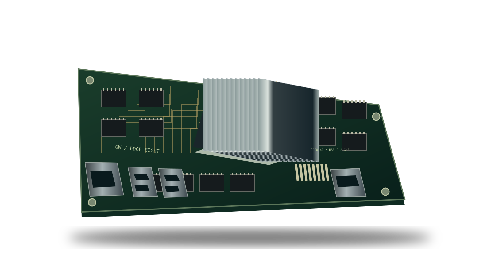
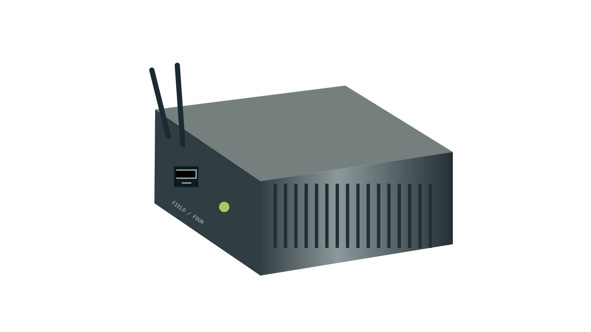
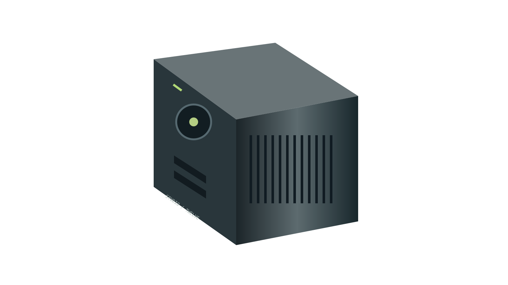

Edge Eight
面向固定点位的视觉观察
- 内存（概念）
- 8 GB
- 接口
- Ethernet / USB-C

RESOURCES / 01
面向固定点位的视觉观察

EXPLORER KIT移动装置的传感采集

STUDIO KIT交互展览的现场计算
3 套概念套件
最多选择两套；不代表真实跑分或兼容认证。
DEPLOYMENT NOTES
不是每个任务都需要同样的设备。把连接、供电与部署边界放在选择前面。
Ethernet适合固定点位；Wi-Fi用于移动装置。USB-C仅为概念接口，不暗示任意外设兼容。
开放PCB需要绝缘与散热边界；机箱提供组织线缆的方式。实际部署仍需具体硬件文档。
样例只讨论视觉观察、传感采集和展览装置，不提供跑分、识别率或认证承诺。
START BUILDING